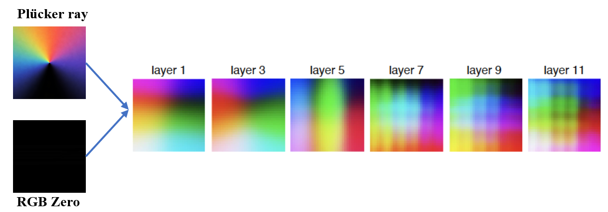

Feedforward novel view synthesis
Resolving Representation Ambiguity in Feedforward Novel View Synthesis Transformer via Semantic-Spatial Decoupling
A decoupled Transformer representation that separates RGB appearance and Plücker-ray geometry while preserving shared attention routing.
Generation Process
Interactive generation explorer
Two posed RGB inputs form the semantic source set, while three target Plücker-ray queries define the output views. The explorer links 3D camera geometry, branch routing, and the rendered trajectory so the feedforward generation process is visible at a glance.
Input views
Two-view input set
gt_vs_pred.png.Abstract
Decoupling appearance and geometry
Transformer-based models have advanced feedforward novel view synthesis (NVS). Current architectures such as GS-LRM and LVSM mix semantic information (e.g., RGB) and spatial information (e.g., Plücker rays) into a shared feature space. Since Plücker rays naturally carry lattice-like spatial structure, these designs can make the spatial bias interfere with appearance representation and degrade rendering fidelity. To this end, we propose to decouple the representation of feedforward NVS transformers into separate semantic and spatial tokens. The decoupled design keeps semantic and spatial information explicit in their branches while preserving cross-branch interaction through shared attention routing. Built on this design, we introduce optional categorized supervision and bidirectional modulation: the former provides branch-specific training signals, while the latter improves interaction between the two branches. Notably, the base decoupled design introduces virtually zero additional inference latency due to its architectural design. The proposed designs achieve consistent improvements, demonstrating effectiveness across decoder-only and encoder-decoder feedforward NVS models.
Feature Analysis
Where grid-like artifacts come from
The visualizations isolate how Plücker-ray structure propagates through intermediate features and why separating semantic and spatial streams reduces representation ambiguity.


Method
Separate branches, shared routing
RGB patches initialize semantic tokens, while Plücker-ray patches initialize spatial tokens. Each decoupled Transformer block computes shared Q/K attention over the full token for cross-view coordination, but applies branch-specific value projections, output projections, layer normalization, and FFNs so appearance and geometry are not forced into the same update channel.

Controlled Results
Fixed-budget comparisons
Baselines and decoupled variants use the same codebase, data split, view sampling, 256x256 resolution, 50K-step schedule, and training budget. The numbers isolate the effect of decoupling under a controlled reimplementation setting.
| Architecture | Dataset | Model | PSNR up | SSIM up | LPIPS down |
|---|---|---|---|---|---|
| Decoder-only | RE10K | Baseline | 26.10 | 0.839 | 0.144 |
| Decoder-only | RE10K | Ours (full) | 27.21 | 0.869 | 0.125 |
| Decoder-only | Objaverse | Baseline | 23.75 | 0.864 | 0.150 |
| Decoder-only | Objaverse | Ours (full) | 26.46 | 0.899 | 0.101 |
| Encoder-decoder | RE10K | Baseline | 24.06 | 0.775 | 0.206 |
| Encoder-decoder | RE10K | Ours (full) | 25.31 | 0.806 | 0.154 |